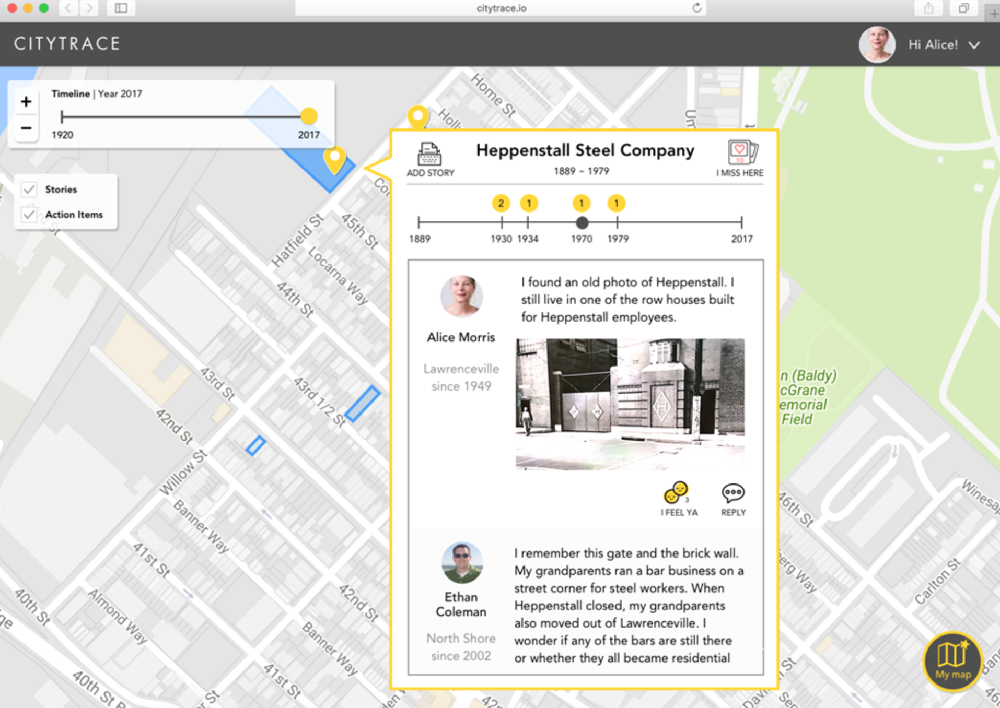
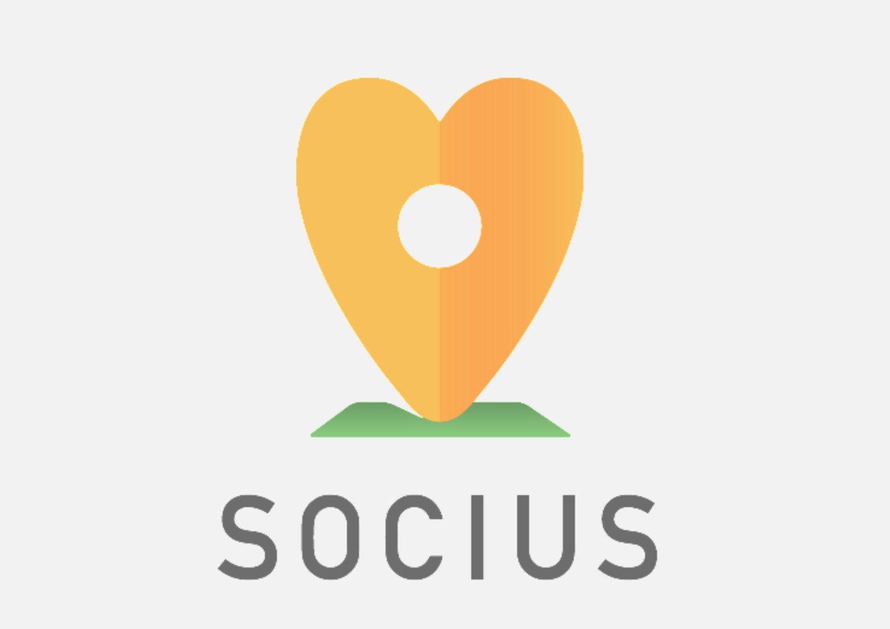

User-centered research driven by deep insights to address complex, social issues.
Project CityTrace
Project CityTrace is a community-based story platform that seeks to counteract gentrifications in Pittsburgh by giving residents a space to share their neighbourhood stories from the past and present.
I joined the team for two months to help generate qualitative insights from field
interviews, explore various design directions through storyboarding and prototyping,
and write out content for our grant proposal.
I joined the team for two months to help generate qualitative insights from field
interviews, explore various design directions through storyboarding and prototyping,
and write out content for our grant proposal.

Socius Homelessness App
Socius is a service application that helps service workers and volunteers better
document their services and measure the impact of their work.
I am currently writing up two IRB proposals for the team to test out the application in
Pittsburgh with the local homeless population. I also oversee app support,
by answering operational questions, building outreach plans, and running instructional
workshops for core users.
document their services and measure the impact of their work.
I am currently writing up two IRB proposals for the team to test out the application in
Pittsburgh with the local homeless population. I also oversee app support,
by answering operational questions, building outreach plans, and running instructional
workshops for core users.
